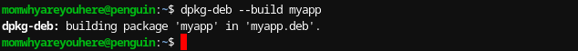

i am gonna show you how to make you own .deb file
I made it very easy for you so you need to run only two commands:
Here are the two commands:
sudo bash -c '
mkdir -p myapp/DEBIAN myapp/usr/local/bin myapp/usr/share/applications && \
echo -e "import tkinter as tk\n\nroot = tk.Tk()\nroot.title(\"MyApp\")\nroot.geometry(\"300x200\")\nlabel = tk.Label(root, text=\"Hello, this is MyApp!\")\nlabel.pack(pady=20)\n\nroot.mainloop()" > myapp/usr/local/bin/myapp.py && \
echo -e "#!/bin/bash\npython3 /usr/local/bin/myapp.py" > myapp/usr/local/bin/myapp && \
chmod +x myapp/usr/local/bin/myapp && \
echo -e "[Desktop Entry]\nVersion=1.0\nName=MyApp\nComment=An application that opens a tkinter window\nExec=/usr/local/bin/myapp\nIcon=utilities-terminal\nTerminal=false\nType=Application\nCategories=Utility;" > myapp/usr/share/applications/myapp.desktop && \
echo -e "Package: myapp\nVersion: 1.0\nSection: base\nPriority: optional\nArchitecture: all\nDepends: python3, python3-tk\nMaintainer: Your Name
You can make some changes on the files
Now run this command:
dpkg-deb --build myapp
Then it should output this:
After that click the file and download it
You should see a app called myapp click on it and it should work
To delete run:
sudo rm -rf myapp
sudo apt remove myapp
after that the file and the package will gonna be removed but not the .deb file and the .deb file will still work